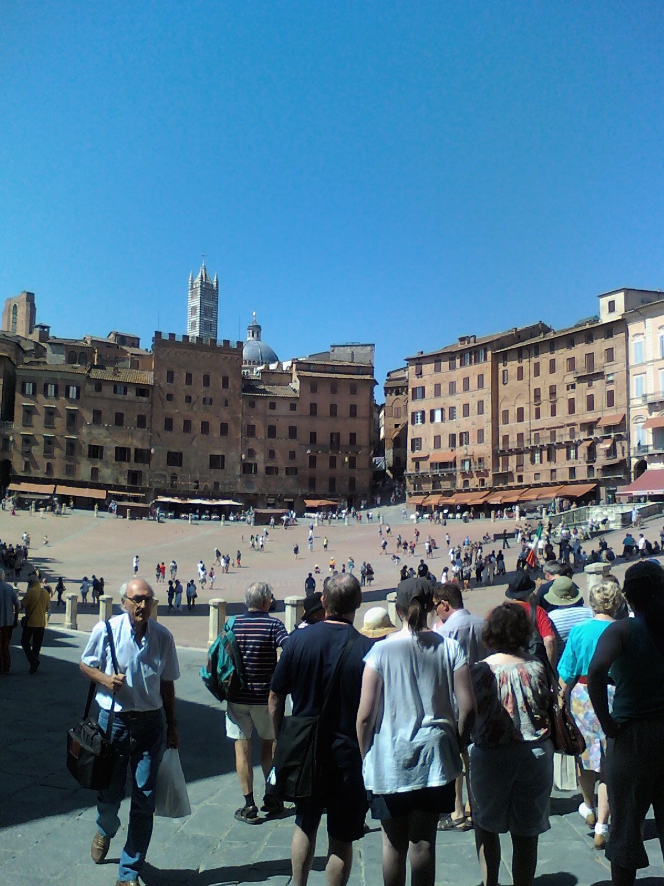

Customer Reviews
| Name | Location & Date | Review |
|---|---|---|
| Marcie M | March 2016 | My husband and I were very impresses with this tour and the one we took in Madrid. The guides were very knowledgeable and friendly. Both tours were well organized and the fee was very reasonable. I will definitely use them again and tell all my friends to use them for their tours. |
| Roland Y | September 2012 | The tour was really well arranged and showed us both history and sights that we would never have found. The trip down the grand canal was fantastic with the sun setting towards the end of the journey. Definitely money well spent.We could do it all again tomorrow. |
| Sandra S | USA, November 2015 | Great local (english-speaking) tour guides who really know the city's history and architecture. Very informative and enjoyable. St. Marks Basilica tour was very short, as only the central cathedral was visited. If you expect a more detailed tour of St. Mark's, I suggest you find a different tour. However, as a overall tour of Venice, especially for 1st time visitors, Venice in One Day tour, both walking and grand canal boat tour, is a great value and truly helps you understand the history and special culture of Venice. |
| Jessie P | September 2015 | My parents and I enjoyed all our tours. The walking tour was very informative and we would never have had enough time to venture back into some of the small canals without a guide This tour gave us the opportunity to see so much more than we would have on our own! During our break we had plenty of time for lunch & some shopping. The boat tour was on a beautiful wood water taxi and our guide was very friendly and informative as well. I will recommend this tour to all my friends and family! |
Photo Gallery
